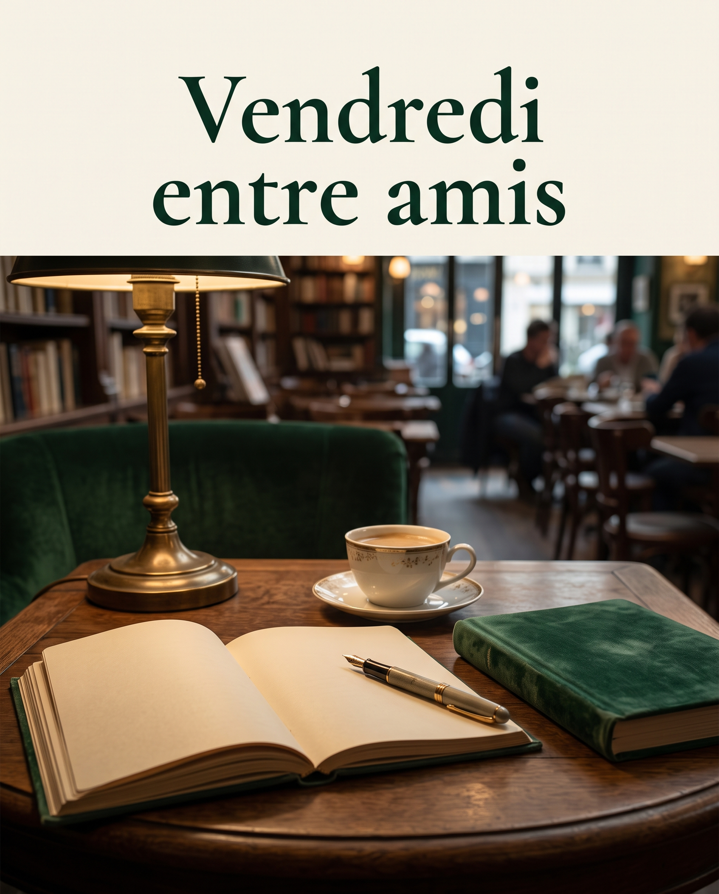

L'Animateur
Spécialiste en FLE avec 13 ans de trayectoria internacional y ex-directeur général d'institutions culturelles. Conçu pour un apprentissage vivant, horizontal et affranchi des structures corporatives rigides.
« Apprendre une langue, c'est embrasser une altérité féconde et affiner son regard sur le monde. »
Espaces de la Semaine

Café du Vendredi
Accédez aux activités principales de chaque semaine, aux amorces de débat et aux exercices thématiques par niveau, conçus pour stimuler l'expression orale.
Carnet de Voyage
Consignez vos réflexions, interactions et le vocabulaire découvert au fil des séances dans votre journal personnel avec toute la rigueur éditoriale requise.